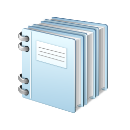

| Name | Number | |
|---|---|---|
| Serafim Pinto | 61056 | a61056@alunos.uminho.pt |
| Daniel Araújo | 61058 | a61058@alunos.uminho.pt |
| Daniel Carvalho | 61008 | a61008@alunos.uminho.pt |
Este relatório descreve o processo de desenvolvimento e o resultado obtido, como consequência da resolução do enunciado do trabalho prático número dois da Unidade Curricular Processamento de Linguagens. O enunciado aqui resolvido é sobre o "Report 2007: vamos escrever relatórios". Este documento trata de analisar e explicar os objectivos deste segundo trabalho. Assim, falaremos das decisões tomadas, os principais obstáculos encontrados e os resultados obtidos. Para além dos conhecimentos que já eram necessários para o primeiro projecto, foi necessário demonstrar conhecimentos sobre ferramentas Flex e Yacc , conhecimentos estes que se mostraram muito úteis e interessantes.
Agradecer a Deus por tudo.
Agredecer pela oportunidade.
Descrição das ferramentas utililizadas
Descrição da Linguagem desenvolvida
lyfluyfjy
çukgfykhfçfk
lyfluyfjy
dsfdf
dsfdf }
çukgfykhfçfk
lyfluyfjy
çukgfykhfçfk
| Dados | Mais dados | Teste |
| MAis dados | TESTE | TESTE2 |
| AInda mais dados | para variar | ok |
| amostra | amostra2 | amostra4 |
Exemplo de cenas
çukgfykhfçfk